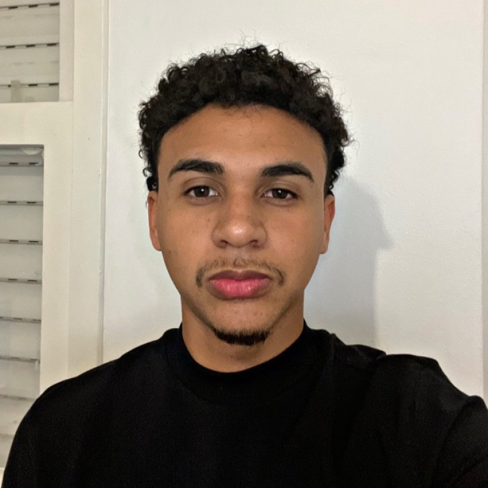
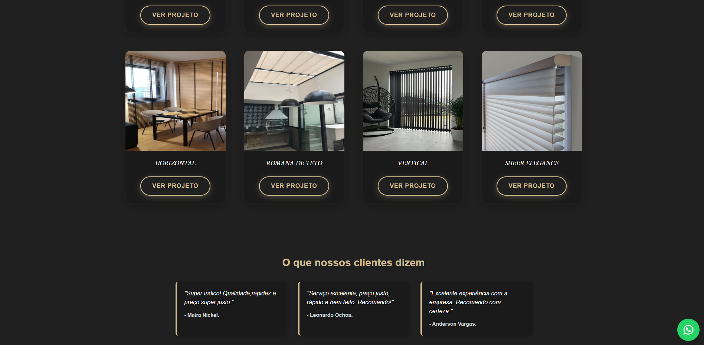

Henrique Alonso
Fullstack Developer
Baixar CurrículoSobre Mim
Olá! Meu nome é Henrique Alonso e sou estudante de Análise e Desenvolvimento de Sistemas, atualmente no 4º semestre da faculdade FAQI.
Atualmente, estou atuando como estagiário em desenvolvimento de software, trabalhando com tecnologias como PHP, MySQL, JavaScript, HTML e CSS no desenvolvimento de sistemas internos (intranet). Tenho contato com organização de código, versionamento com Git/GitHub e manutenção de aplicações reais em ambiente corporativo.
Possuo experiência tanto em front-end, criando interfaces modernas e responsivas, quanto em back-end, desenvolvendo lógicas e integração com banco de dados. Também já atuei com suporte técnico, o que fortaleceu minha visão prática de sistemas e resolução de problemas.
Meu objetivo é evoluir como desenvolvedor full stack, construindo soluções completas, eficientes e bem estruturadas. Estou em constante aprendizado, buscando aprimorar minhas habilidades e crescer profissionalmente na área de tecnologia.

Formação
Análise e Desenvolvimento de Sistemas
Faculdade FAQI
2024 - 2026 (em andamento)
Experiência
Desenvolvedor Fullstack
AtualIpê Saúde · Estágio
Março 2026 – Presente
Atuo no desenvolvimento de sistemas internos (intranet), utilizando HTML, CSS, JavaScript, PHP e MySQL. Participo da organização e padronização do código, incluindo a centralização de funções em controllers, contribuindo para uma melhor estrutura e manutenção da aplicação. Utilizo ferramentas como XAMPP, DBeaver, VS Code e GitHub no fluxo de desenvolvimento.
Suporte Técnico
Ipê Saúde · Estágio
Dezembro 2025 – Fevereiro 2026
Atuei no suporte técnico, realizando atendimento a usuários por meio de chamados no sistema GLPI. Fui responsável por formatação e configuração de computadores, acesso remoto utilizando UltraViewer, manutenção de hardware e suporte geral em TI. Também utilizei Active Directory para gerenciamento de usuários e permissões.
Tecnologias
Projetos


Projeto Acadêmico Fullstack
Meu primeiro projeto full stack, utilizando JavaScript, Node.js, Express, HTML, CSS e MySQL. Um aprendizado completo, aplicando tanto front-end quanto back-end.

Projeto pessoal - Cursos online
Projeto de front-end com HTML, CSS e JavaScript, focado em treinar estilos dinâmicos e interações usando JavaScript.